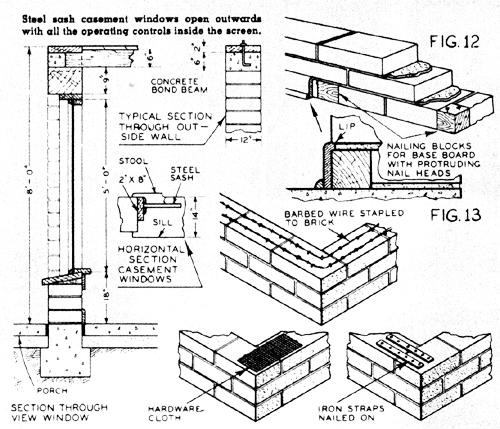
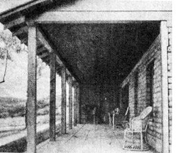
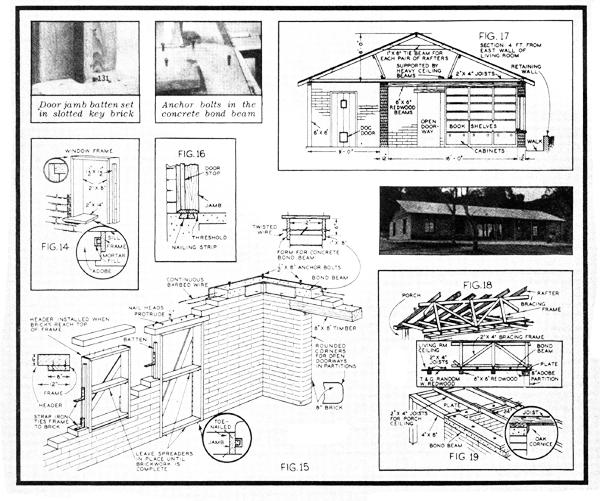
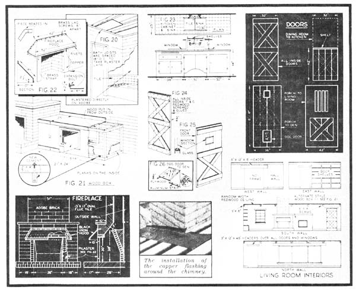

Once again, we're pleased to roll the clock back 30 years in order to reprint another in our series of articles by Hi Sibley (see "100 Concrete Blocks per Hour" in MOTHER NO. 45 and the first half of the two-part article "Modern Home From Mud" in MOTHER NO. 46).
Hi, in case you've never heard of his work, was living a MOTHER-type life of do-it-yourself adobe houses, organic gardening, homestead bees, and like that away back at the end of World War II. And not only living it . . . but writing about it in a great number of magazines. Unfortunately for us all, more folks back there in the late 40's were interested in big cars. city jobs, and new homes in the suburbs ... than were interested in Hi's subjects.
Now that so many of us are rediscovering Mr. Sibley's way of life, though. we think it's only fair to honor the man who was 30 years ahead of his time by again publishing some of his down-to-earth gems one more once. This-the second of a two-part articleoriginally appeared in the March 1947 issue of Mechanix Illustrated (copyright 1947 by Fawcett Publications, Inc.) and is reprinted by permission.
Last month, you remember, we placed the pats in a slow oven and then immersed them in cold water for 24 hours. The proper proportion of stabilizer is indicated by the pat which does not become soft or discolor the water. After the bricks are thoroughly dry, check each for cracking, absorption, strength, and erosion under a stream of water from the hose. The pat tests will indicate the action of the corresponding bricks.
MIXING THE SOIL. Mixing can be done in a scow by hand, Fig. 7. The soil should be thoroughly screened to remove lumps or stones. Hand mixing is satisfactory though laborious, so if you can obtain a power mixer such as a pug mill, discarded dough mixer, or plaster mixer you will speed up the job as well as escape a lot of back aches. These mixers are better than concrete mixers as they break up the soil more thoroughly. One ingenious builder rigged up a horsepowered pug mill, Fig. 8, with blades on a vertical shaft turning in an upright wooden box. It is loaded at the top and discharged at the bottom. An enginedriven type is shown in Fig. 9.
Brick making can be speeded by pouring in large flats, Fig. 10, and cutting to size with a knife and straightedge. If individual or gang molds are used they should be cleaned and doused in water after each operation.
On the second or third day the bricks will be hard enough to stand on edge to cure for about a week. Then stack as shown in Fig. 11 (never flat on each other) for another week, after which they are ready to lay in the wall.
Now that we "a%-e taken care of the foundations a^:d the brick making, we are ready for the actual lay-. ' ing of the bricks. Bricks should be laid with treated cement mortar joints at least 1/2 in. thick. Use 2-1 2 cu. ft. of sand and ', 11/2 gallons of Hydropel to each sack of cement and enough water for mortar consistency. Bricks should be washed to remove dust and while still Wet should be laid with joints broken between the courses and interlapped at all corners and wall sections. If a base; board is to be installed, nailing blocks should be inset every two bricks or so. In some cases a brown floor paint is applied about the height of the first course, so that s smudges from mop or broom will not show up on the white walls. You can reinforce the brick by stapling two strands of barbed wire, every three courses around the house. Hardware cloth and wide strips of iron were used in the writer`s house, Fig. 13.
WINDOW AND DOOR FRAMES. Slotted key brick should be laid on each side key the window and door frames from bottom to top. A batten on the frame sets in the slot and mortar is filled in around to make a complete seal, Fig. 14.
The frame and sill are made of 2 in. stock. If 2 X 14 in. material is unobtainable, the sill may be made of two pieces with the joint coming under the sash or molding. Angle brackets are nailed to the batten and to the key brick to anchor the frame to the wall. Bear in mind that before the brick laying starts on the door frames they should be squared up and braced to retain them in line; the same is true of the window
frames as soon as the wall reaches the sill level. Also, a temporary brace should be placed in the middle as well as the bottom of the door jamb to prevent bowing in, which it most certainly will do if not braced, see Fig. 15.
When the walls have reached the level of the top of the frames, install a lintel of reinforced concrete or a 3 X 12 in. plank. The writer was able to buy some heavy timbers from a hundred-year-old winery which was being dismantled and these came in very handy. Over the 13-foot window in the living room a 16-foot timber, 12 inches square, was used for a lintel. For the open doorways, 8 X 8 in. timbers were built into the wall. In the case of any such wood members, nails are driven in with heads projecting half an inch to be embedded in the mortar.
To tie the top of the wall securely and form a base for the plate, a concrete bond beam 6 in. deep and the width of the wall was poured and reinforced with steel rods. This is particularly important at corners, over doors, and at windows. Use 1 X 8 in: boards as forms secured to each side of the wall with twisted wire which will be embedded in the concrete when the ends are cut and forms removed. Anchor bolts are set at all corners and at intervals of four or five feet. To prevent concrete dribbling down between board and wall, place a strip of paper, 2 in. wide, folded to a right angle. Leave the forms in place for several days. Do not expose the concrete to the hot sun or drying winds; cover with burlap or old canvas and sprinkle with water frequently. Any concrete that has dripped down over the adobe brick can easily be chipped off when dry.
After the mortar in the walls has thoroughly set, the bracing in the window and door frames may be removed and the door sills installed, preferably after the roof is on and all floor work is completed, Fig. 15.
ROOF AND CEILING CONSTRUCTION. 2 X 12 in. plates are bolted on the outside walls and 2 X 8 in. plates over the partitions. Ceiling joists and rafters are nailed to these. The sectional view, Fig. 17, illustrates the general construction. In the living room, 6 X 6 in. solid redwood beams are set into the concrete bond beam at each end and notched so that the plate lies flush with the tops. Over these heavy beams random width tongue-andgroove redwood is laid, with ceiling joists over them. Joists, 2 X 4 in., are spaced 24 in. on centers except in the bathroom where they are spaced at 16 in. to accommodate rock lath, Fig. 20. The bracing of the roof structure is illustrated in Fig. 18. This method not only supports the long rafters in the middle but resists end-to-end or gable-to-gable pressure under strong winds.
In all rooms except living room the joists are installed first, directly on the plate, and the ceiling boards nailed on the underside, Fig. 19. In bedrooms, hall, and kitchen this is shiplap knotty pine, in the dining room random width tongue-andgroove oak. A cornice of the same material is installed in every room covering the edge of the plate. None is used in the bathroom as the walls and ceiling are plastered, the former directly upon the adobe brick without metal lath or other retaining device, Fig. 20. Incidentally, the built-in bath tub must be installed before the walls are laid up. All other fixtures can be installed later, although concealed piping should be in place before brick laying is started.
WOODBOX. The woodbox is of shiplap pine built against the wall and fireplace, Fig. 21. Fuel is passed in from the outside. Heavy plank sheathing prevents damage to the pine walls. Sills, 2 X 4 in., are bolted to the floor; see the enlarged view in Fig. 21 for details.
FIREPLACE HOOD. This is made of copper and secured to the masonry with expansion bolts set into the mortar. The pilasters or facings over the firebrick are also copper, secured in the same manner, Fig. 22.
KITCHEN SINK. A cabinet is built up on 2 X 4 sills, anchor-bolted, and framed in the conventional manner, except that the top is a shallow trough to hold the tile cement upon which the tile is laid, around the sink proper. A large drawer and shelves are dimensioned as necessary.
PAINTING. The unplastered interior walls are painted with Kemtone, an ivory-tinted water paint. One application covers completely, yielding pleasant, light interiors. The pine kitchen ceiling, shelves, and sink cabinets are finished with ivory enamel. Living room ceiling, beams, oak cornices, and all doors are oiled to show their natural grain. The inside of the bathroom door is enameled the same as the plastered bathroom wall. In lieu of a wooden baseboard, paint one with brown floor enamel, a tone that harmonizes with the asphalt tile floor covering. The redwood doors and window frames are oiled, while the sash and gable siding are painted tile red.
In conclusion you may be interested in knowing that quite a number of stabilized adobe brick homes have been constructed in recent years. They have proven to be very satisfactory, livable, and most charming. In fact, a colony has grown up in Carmel, California, where most of the homes use this type of building material. Generally speaking, however, adobe brick construction is recommended for fairly arid areas, such as those which prevail west of Kansas.
|
 This veranda really invites you to take it easy It has a concrete floor that measures 9 ft. wide. |
 |
 |
|
 |
|
|